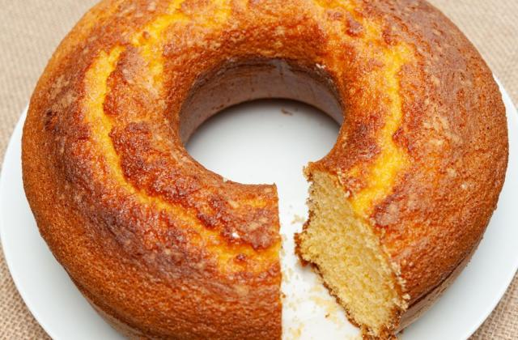

Bolo de Fubá
A receita de bolo de fubá é uma das mais tradicionais do nosso país! Ela é simples, gostosa e perfeita para a hora do lanche! Confira agora mesmo como fazer um bolo de fubá delicioso!
Ingredientes
- 3 ovos
- 2 xícaras (chá) de fubá
- 1/2 copo (americano) de óleo
- 1 colher (sopa) de fermento em pó
- 2 xícaras (chá) de açúcar
- 3 colheres (sopa) rasas de farinha de trigo
- 1 copo de leite
Modo de preparo
- Bata todos os ingredientes no liquidificador
- Coloque em uma forma untada e enfarinhada
- Leve ao forno preaquecido e deixe assar, por cerca de 40 minutos